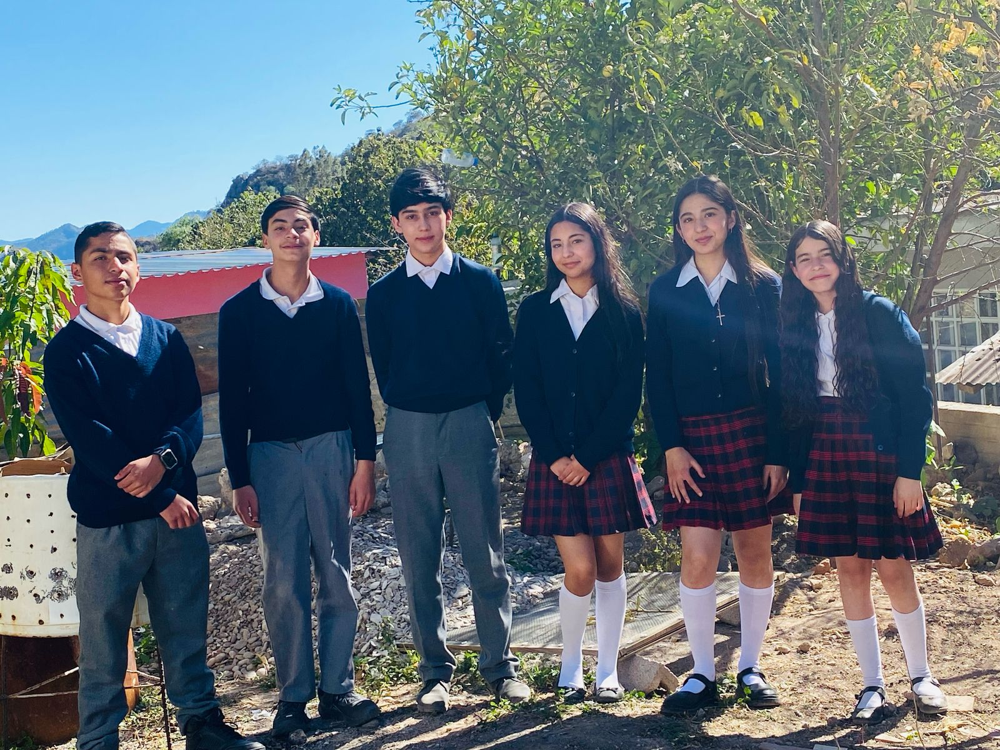

Somos un grupo de estudiantes de la Escuela Secundaria Técnica 42 de municipio de Topia, Durango. Estamos conformados por 6 alumnos de diferentes grados y secciones, nosotros estamos buscando reducir el impacto ambiental y las consecuencias por contaminación, concientizando a las personas de nuestra comunidad a reciclar y reducir los desechos dañinos.
El proyecto nació en 2025 como una iniciativa estudiantil para combatir la contaminación en nuestra comunidad. Al observar el impacto negativo de la basura en Topia, decidimos tomar acción y desarrollar esta página web de concientización y acción ambiental. Las principales fuentes que se contaminan en la comunidad de Topia son: el agua, suelo, aire, ruido, etc. Mediante esta, podremos dar a conocer la problemática en nuestra comunidad y concientizar a las personas para que cuiden de nuestro planeta. "La salud del planeta depende de nuestras acciones. ¡Cuida el medio ambiente y reduce la contaminación!"
Ser una plataforma integral de información, educación y concientización, promover la protección del medio ambiente, crear conciencia sobre el impacto ambiental de la contaminación y promover acciones sostenibles para mejorar nuestro entorno.
Ser una fuente de información confiable y actualizada sobre la contaminación en Topia Durango, ser un referente en educación ambiental y acciones ecológicas en nuestra comunidad, inspirando a otros a proteger el medio ambiente.
Este proyecto fue desarrollado por un equipo de alumnos y docentes apasionados por el medio ambiente.
Síguenos en nuestras redes para estar informado sobre nuestras actividades:
 Facebook
Facebook
 X (Twitter)
X (Twitter)
 Correo Electrónico
Correo Electrónico